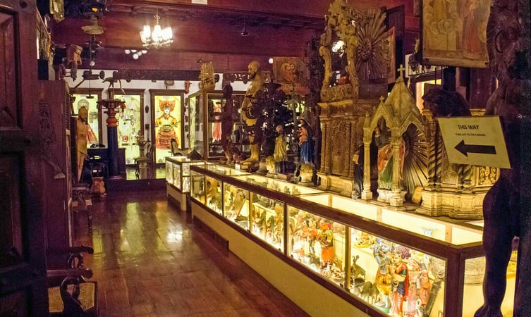

01.Folklore Museum

The museum is dedicated to Folk art, Tribal art, Traditional art, Anthropology, Architecture, History, Culture, and Heritage of South India. The museum is promoted by Mrs. & Mr George Thaliath and aims to preserve, the culture, heritage and folk art education of Kerala.
It is a storehouse of lost pride of the southern part of India which consists of some rare artefacts like Sri Guruvayurappan, watercolour on paper, Lord Brahma and Goddess Saraswathi marriage, oil on canvas, Kindi, a type of a pitcher usually found in old houses and many other precious treasures.
62 artists worked on wood for almost 8 years burning the midnight oil to create this temple for artisans. A must visit place for tourists, students, researchers and also for anthropological studies.
Location: Near 2059C No 26 Pandit Karuppan Road, Thevara Ferry Road, Junction, Kochi.
Entry Fees: Rs. 50/- for students and Rs. 100/- for adults.
Timings: 9.00 am to 6.00 pm everyday.
02.Cherai Beach

This charming beach is neatly nestled in the suburbs of Cherai, which is one of the most visited beaches due to its serenity and clean environ. The low tides and slow waves make it a highly recommended beach for swimming and other forms of water sports. It has an alluring walkway along the beach dotted with greens and sufficient places for seating.
Elderly visitors are often seen indulging in yoga, meditation or light strolls during the early morning or evening hours to enjoy the splendour of mother nature. The beach has several luxury villas, resorts and beach hotels lined along the Arabian sea where river Periyar confluence to make for a picture postcard frame.
Location:Ernakulam 15 km from Kochi.
Entry Fees: None.
Timings:Sunrise to Sunset.
03.Chinese Fishing Nets
Chinese fishing nets, also known as Cheena wala are seen quite frequently in Kochi. These are stationary lift nets fixed at a particular place operated from the shore using mechanical contrivances to fishing nets almost 20m across.
This unique way of fishing was introduced by the Chinese traders in the 14th century extending its relevance to “Ko-chi”, meaning China like. Sunsets across the backwaters, rivers or sea offer a panoramic splendour of the skyline with silhouettes of Chinese fishing nets in the backdrop.
Location:Across water bodies of Kochi.
Entry Fees: None.
Timings: All Day